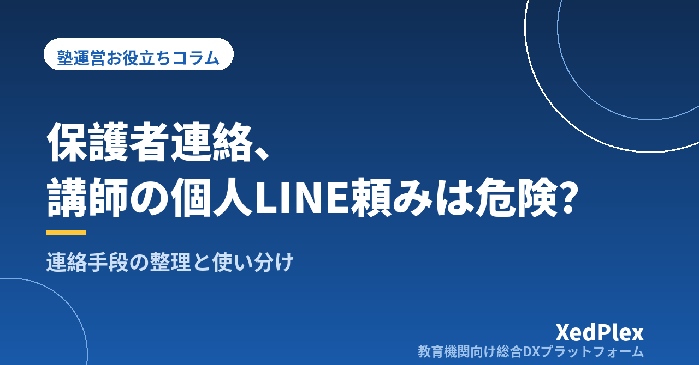

塾の保護者連絡、講師の個人LINE頼みは危険？連絡手段の整理と使い分け

小規模な塾ほど、保護者との連絡は「気づいたらLINEでやり取りするようになっていた」というケースが多いものです。LINEは保護者にとって身近で、既読もわかり、たしかに便利です。しかし、塾長や講師の個人アカウントで保護者とつながる運用には、塾の信頼に関わるリスクがいくつも潜んでいます。
この記事では、個人LINE運用の具体的なリスクと、連絡の種類ごとの適切な手段の使い分け、そして保護者に負担をかけずに移行する手順を解説します。
個人LINE運用に潜む4つのリスク
1. 講師が辞めたら連絡網ごと消える
保護者とのやり取りが講師個人のアカウントに紐づいていると、その講師が退職した瞬間、過去のやり取りの履歴も連絡手段そのものも塾に残りません。後任への引き継ぎができず、保護者に「もう一度友だち登録をお願いする」ことになります。
2. 誤送信の影響が大きい
個人アカウントは塾の連絡とプライベートが同じ画面に並びます。別の保護者宛のメッセージや、内部向けの本音を誤って送ってしまう事故は、個人アカウント運用でもっとも起こりやすく、もっとも取り返しがつきません。
3. 記録が塾に残らない
「言った・言わない」のトラブルになったとき、やり取りの記録が講師の私物スマホの中にしかない状態は、塾として保護者に説明ができません。欠席連絡や面談日程のような重要な連絡ほど、塾として記録が残る手段で受けるべきです。
4. 講師のプライベートが守られない
深夜や休日でも通知が届き、講師個人が保護者からの連絡に即時対応を求められる状態は、講師の負担・離職リスクにも直結します。連絡窓口を塾として一本化することは、講師を守ることでもあります。
連絡を3種類に仕分ける
手段を選ぶ前に、まず塾から保護者への連絡（およびその逆）を種類ごとに仕分けるのがおすすめです。
| 種類 | 例 | 求められる性質 |
|---|---|---|
| 緊急連絡 | 臨時休講、災害時の対応、下校時刻の変更 | 確実に・すぐ届くこと |
| 事務連絡 | 月謝・講習の案内、面談日程、持ち物 | 記録が残ること、全員に漏れなく届くこと |
| 学習報告 | 授業の様子、宿題の状況、テスト結果 | 生徒ごとに整理されて蓄積されること |
個人LINEの問題は、この3種類が全部「個人アカウントのトーク」に混ざってしまうことです。仕分けができると、どの連絡にどの手段を使うべきかが自然に決まります。
連絡手段の比較
| 手段 | 向いている用途 | 注意点 |
|---|---|---|
| LINE公式アカウント | 緊急連絡・一斉のお知らせ | 無料プランは月の配信数に上限あり／個別の学習報告の蓄積には不向き |
| メール | 事務連絡・書面に近い案内 | 開封されにくくなっている／迷惑メール振り分けに注意 |
| 紙のお便り | 月間予定表など保存してほしいもの | 生徒経由だと届かないことがある |
| 塾専用の連絡システム・アプリ | 事務連絡＋学習報告＋出欠などの一元管理 | 導入時に保護者への案内が必要／費用は要確認 |
小規模塾の現実解としては、「緊急連絡はLINE公式アカウント、記録を残したい連絡と学習報告は塾として管理できる仕組み」という二本立てがバランスの良い形です。すべてを一度に完璧にする必要はありません。
保護者に負担をかけない移行の進め方
- 新規入塾の家庭から新ルールを適用する：既存家庭を一斉に切り替えるより摩擦がありません
- 切り替えの理由を「お子さまの情報を守るため」と伝える：塾の都合ではなく、生徒・保護者のメリットとして説明すると受け入れられやすくなります
- 移行期間を設ける：「今月中は両方使えます。来月からは新しい窓口に一本化します」と期限を切って案内します
- 講師の個人アカウントでの新規のやり取りは禁止にする：ルール化しないと、なし崩しで元に戻ります
まとめ
講師の個人LINEに頼った保護者連絡は、便利な反面、「引き継げない」「誤送信」「記録が残らない」「講師が疲弊する」という4つのリスクを抱えています。まずは連絡を緊急・事務・学習報告の3種類に仕分け、それぞれに適した手段を割り当てることから始めてみてください。連絡窓口を塾として一本化することは、保護者からの信頼にも、講師の働きやすさにもつながります。
この記事を書いた運営より
私たちは、個人経営・小規模の学習塾向けに、生徒管理・QRコードでの入退室記録・月次請求・保護者へのLINE/メール通知・AIによる学習支援までをひとつにまとめた教育機関向け総合DXプラットフォーム「XedPlex（ゼドプレックス）」を開発・提供しています。初期費用は0円、料金は生徒1名あたり月額300円（税込）から。生徒50名の塾なら月15,000円（税込）です。全国8つの教室で導入されており、導入塾には紹介ホームページの無料作成も行っています。機能の詳細説明はこちら。
XedPlexの詳細を見る